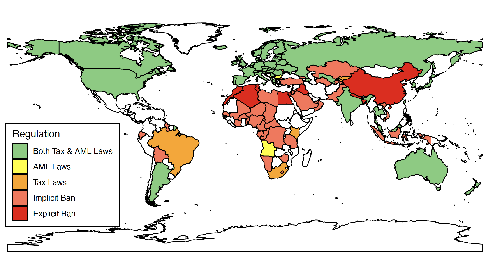

Karen Nershi
| HOME | CV | RESEARCH | TEACHING |

I am an Assistant Professor of Political Science at IE University. Before that, I was a Postdoctoral Fellow at Stanford University's Stanford Internet Observatory and the Center for International Security and Cooperation (CISAC). Through an empirical lens, my research examines questions of international cooperation and regulation within international political economy, including challenges emerging from the adoption of decentralized digital currency and other new technologies.
I completed my Ph.D. in political science at the University of Pennsylvania (2021) specializing in the fields of international relations and comparative politics. Specific topics I explore in my research include ransomware, cross-national regulation of the cryptocurrency sector, and international cooperation around anti-money laundering enforcement. I am a winner of the Perry World House Foreign Affairs Emerging Scholars Policy Prize (2023), and my research has been supported by the Stanford Cyber Policy Center, the University of Pennsylvania GAPSA Provost Fellowship for Innovation, and the Christopher H. Browne Center for International Politics. My research has been covered in the media by WIRED, The Washington Post, and Infosecurity Magazine, and has inspired a data collection collaboration with The Guardian.
Before beginning my doctorate, I earned a B.A. in International Studies with honors at the University of Alabama. I have lived and studied Arabic in Amman, Jordan and Meknes, Morocco as a Foreign Language and Area Studies Fellow and a Critical Language Scholarship recipient. I also lived and studied in Mannheim, Germany, in addition to interning at the U.S. Consulate General Frankfurt (Frankfurt, Germany).
karen.nershi@ie.edu
IE University
School of Politics, Economics, and Global Affairs
Castellana 259
28046 Madrid, Spain


1) Assessing the Political Motivations Behind Ransomware Attacks [SSRN]
with Shelby Grossman
Although traditionally viewed as apolitical, recent developments suggest there may be connections between some ransomware groups and the Russian government. To better understand this relationship, we created a dataset of 4,194 ransomware victims posted to the dark web between May 2019 and May 2022. We find that Russia-based ransomware groups increased attacks before elections in several major democracies, and companies that curtailed operations in Russia after the invasion of Ukraine were more likely to be targeted; these findings suggest potential political motivations behind these attacks. We also analyze a major ransomware group's leaked internal communications, which show ties to the Kremlin. We argue that the Russian government maintains an informal cooperative relationship with groups by providing safe harbor from prosecution and receiving plausible deniability for attacks and access to skilled cyber actors. Our findings suggest ransomware presents an international security threat in addition to functioning as a form of crime.
Media: WIRED; The Washington Post; SC Media; Infosecurity Magazine (podcast).
2) How Strong Are International Standards in Practice? Evidence from Cryptocurrency Transactions [SSRN]

Data source: Law Library Of Congress, U.S. Global Legal Research Directorate, Issuing Body. Regulation of cryptocurrency around the world: November 2021 Update. Washington, D.C., 2021. Pdf. https://www.loc.gov/item/2021687419/.
Abstract:
The rise of cryptocurrency (decentralized digital currency) presents challenges for state regulators given its pseudonymous nature and connection to illegal activity, allowing both individuals and businesses to engage in regulatory arbitrage. I assess the degree to which states have managed to regulate cryptocurrency exchanges, providing a detailed study of international efforts to impose common regulatory standards for a new technology. I provide a dataset of cryptocurrency transactions collected from exchanges located in countries around the world during a two-month period in 2020 and employ bunching estimation to compare levels of unusual activity below a threshold at which exchanges are required by law to screen their customers for money laundering risk. I find that exchanges in some, but not all, countries show unusual activity below the threshold; these findings suggest that while countries have made progress toward regulating cryptocurrency exchanges, gaps in enforcement across countries continue to allow for regulatory arbitrage.
3) Measuring Reputational Harm in Money Laundering Cases [SSRN]
Most countries have adopted anti-money laundering laws during the last twenty years, but growing evidence shows widespread lapses in enforcement. Accordingly, scholars seek to understand what factors lead states to enforce these laws. One argument is that countries enforce these laws to protect against the reputational harm that involvement with money laundering could cause. Specifically, scholars argue that both states and financial institutions can experience reputational harm from association with money laundering, leading to decreased foreign investment as actors move their funds to safer jurisdictions. Although this theory is widely referenced, the literature lacks a convincing test of it. To test this, I have collected a new dataset of money laundering cases based on international news coverage. At the state level, I use the \textit{synthetic control }method to test for changes in countries' foreign portfolio investment following news of major money laundering cases in Switzerland, Panama, and Denmark. For financial institutions, I use the \textit{event study }method to test whether the price of a financial institution's security decreases following news of a money laundering investigation. For both states and financial institutions, I find no evidence that news of a money laundering case causes reputational harm. Thus, my findings call into question claims that actors enforce anti-money laundering laws to protect their reputations.
4) Quantifying International Pressure: Synthetic Estimates of the Economic Impact of Blacklisting [PDF]
An important factor in the global adoption of anti-money laundering laws was the use of a blacklist by the Financial Action Task Force (FATF), an international organization dedicated to coordinating the fight against money laundering. Although the blacklist is now defunct, it was an extremely effective tool that allowed the FATF to bring about widespread policy changes in a short period of time. Despite near universal recognition of its success, there is a lack of consensus about how the blacklist functioned and whether it caused financial harm to listed states. We explore several explanations of how blacklisting functioned and argue it primarily relied on economic coercion enabled by the FATF's powerful members. We then test whether blacklisting caused economic harm to listed countries using the synthetic control method, which enables causal estimates by creating a counterfactual ``synthetic'' control unit using a weighted average of like countries. We find that blacklisting contributed to lower gross domestic product (GDP) per capita in the decade after blacklisting for one third of the countries in the sample. Based on these findings, we argue that blacklisting's legacy as a tool of economic coercion -- along with the very real consequences for some listed countries -- can help explain the rapid global diffusion of anti-money laundering laws and continues to influence international efforts to address money laundering today.
5) Ties that Bind? Chinese Foreign Direct Investment & Political Influence in Africa [PDF]
Over the past two decades, China has invested heavily in Africa alongside a growing demand for key minerals, leading some scholars to argue that investment has increased China’s political influence in receiving countries. Conversely, some argue that Chinese investment has created backlash as it extracts finite natural resources without creating local economic benefits. I test whether Chinese investment has led to political influence by measuring changes in attitudes toward China and support for democracy (the main alternative to the Chinese political model) in localities receiving Chinese investment. Using data from Afrobarometer, Pew Research, and AidData, I test this question across 297 localities in 25 African countries between 1999 and 2015 and employ Bartik-like shift-share instruments to exogenously predict Chinese investment. This paper provides evidence that Chinese investment has negatively impacted support for free elections in Africa (though there is no significant effect for other democracy-related outcomes) and offers a rigorous empirical test of whether foreign investment can produce political influence.
6) Ranked Choice Voting & Minority Candidates' Electoral Chances: Evidence from California Local Elections
with Selina Hofstetter
In recent years, Ranked Choice Voting (RCV) as an electoral reform has experienced momentum in the United States with an increasing number of states and cities introducing it. A common expectation is that RCV improves female and racial minority representation. However, while the literature is growing, we still have limited evidence on the political effects of RCV. In this paper, we estimate the impact of RCV on the electoral chances of women and racial minorities using difference in differences and data from California's local elections where four cities introduced RCV for certain political offices between 2004-2018. Our findings show that in open-seat elections, the electoral chances of racial minorities increase, but that there is no effect for women.
Introduction to International Relations
Teaching Assistant. Fall 2016 and fall 2020. Instructor: Professor Edward D. Mansfield
International Relations and Ethics
Teaching Assistant. Spring 2018. Instructor: Professor Mark A. Pollack
Introduction to International Relations
Teaching Assistant. Fall 2017. Instructor: Professor Alex Weisiger
International Political Economy
Teaching Assistant. Spring 2017. Instructor: Professor Mark A. Pollack
Please email me for syllabi, teaching evaluations, lecture slides, and other course materials.